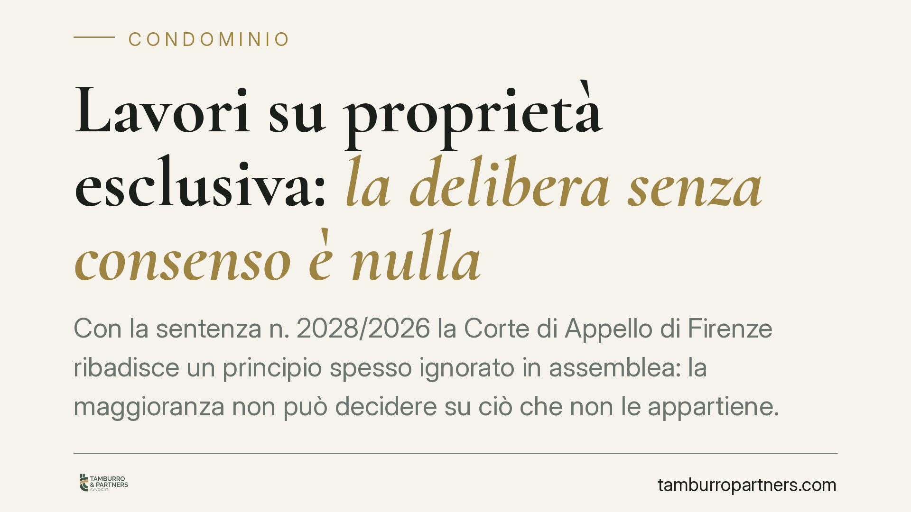

Lavori su proprietà esclusiva: la delibera senza consenso è nulla
Con la sentenza n. 2028/2026 la Corte di Appello di Firenze ribadisce un principio spesso ignorato in assemblea: la maggioranza non può decidere su ciò che non le appartiene. La delibera che impone lavori o spese su beni di proprietà esclusiva, senza il consenso dei titolari, è radicalmente nulla. La pronuncia interviene anche sui requisiti minimi della domanda di mediazione.

Il caso e la decisione
La questione è tanto ricorrente quanto sottovalutata: fin dove arriva il potere dell'assemblea condominiale? La Corte di Appello di Firenze, con sentenza n. 2028/2026, traccia un confine netto. L'assemblea può deliberare sulle parti comuni dell'edificio, non su ciò che appartiene ai singoli condòmini in via esclusiva.
Quando una delibera impone lavori o ripartisce spese incidendo su beni di proprietà individuale, senza il consenso di chi ne è titolare, essa non è semplicemente annullabile: è radicalmente nulla per impossibilità giuridica dell'oggetto. La distinzione non è formale. La delibera annullabile va impugnata entro trenta giorni, decorsi i quali si consolida; la delibera nulla può essere fatta valere da chiunque vi abbia interesse, senza limiti di tempo.
Inquadramento normativo
Il principio poggia sul riparto di competenze tra assemblea e proprietà individuale. L'assemblea è sovrana sulle parti comuni indicate dall'art. 1117 c.c. e sulla gestione dei relativi oneri, secondo i criteri di ripartizione previsti dal codice.
Rilevante, in materia di lastrico solare, l'art. 1126 c.c., che disciplina la contribuzione alle spese di manutenzione quando il lastrico è di uso esclusivo: chi ne ha l'uso concorre per un terzo, gli altri due terzi gravano su chi vi trova copertura. Ma la ripartizione presuppone spese su un bene comune o su un bene il cui regime di contribuzione è definito dalla legge. Diverso è il caso in cui l'assemblea pretenda di disporre di un bene esclusivo: qui manca alla radice il potere deliberativo.
La nullità per impossibilità dell'oggetto discende dal fatto che l'organo collegiale delibera su una materia sottratta alla sua competenza. Un vizio che attiene al contenuto stesso della decisione, non alle modalità con cui è stata adottata.
Il profilo della mediazione
La sentenza chiarisce anche i requisiti minimi di validità della domanda di mediazione, condizione di procedibilità nelle controversie condominiali ai sensi del d.lgs. 28/2010. La domanda deve individuare con sufficiente precisione le parti, l'oggetto e le ragioni della pretesa: un'istanza generica o incompleta non assolve l'onere e può compromettere la procedibilità del successivo giudizio.
È un richiamo alla cura nella fase pre-processuale, troppo spesso trattata come adempimento burocratico. Una domanda ben costruita definisce il perimetro della lite e tutela la posizione di chi la propone.
Implicazioni pratiche
Per il proprietario esclusivo la pronuncia è una garanzia: nessuna maggioranza può imporgli interventi o costi su ciò che è suo, salvo consenso o diversa previsione di legge. Se ciò accade, la delibera è impugnabile senza il vincolo dei trenta giorni.
Per l'amministratore e per l'assemblea il messaggio è di prudenza. Prima di deliberare interventi che toccano beni privati occorre verificare la natura del bene e acquisire il consenso dei titolari. Deliberare oltre i propri poteri espone il condominio a contenziosi e a delibere prive di effetti.
Attenzione, infine, alla qualificazione del bene: la linea tra parte comune e proprietà esclusiva non è sempre evidente e va accertata caso per caso, alla luce dei titoli e del regolamento.
Cosa fare in concreto
- Verificate la natura del bene prima di ogni delibera: consultate titoli di provenienza, regolamento condominiale e tabelle millesimali per distinguere parti comuni e proprietà esclusive.
- Acquisite il consenso scritto dei proprietari esclusivi quando l'intervento incide sui loro beni: senza consenso la delibera è nulla.
- Distinguete i vizi: se ricevete una delibera che dispone su beni privati, valutate se si tratti di nullità (rilevabile senza termine) o di mera annullabilità (trenta giorni).
- Curate la domanda di mediazione: indicate con precisione parti, oggetto e ragioni della pretesa, per non pregiudicare la procedibilità.
- Documentate le decisioni assembleari e i relativi presupposti, così da poter dimostrare la corretta individuazione delle competenze.
Disclaimer
Contributo informativo a cura di Tamburro & Partners - Avv. Giuseppe Tamburro. Non costituisce parere legale.
Ogni condominio ha una storia a sé.
Se gestisci un'amministrazione e vuoi un confronto su una specifica questione condominiale, scrivi allo studio. Ti rispondiamo entro un giorno lavorativo.